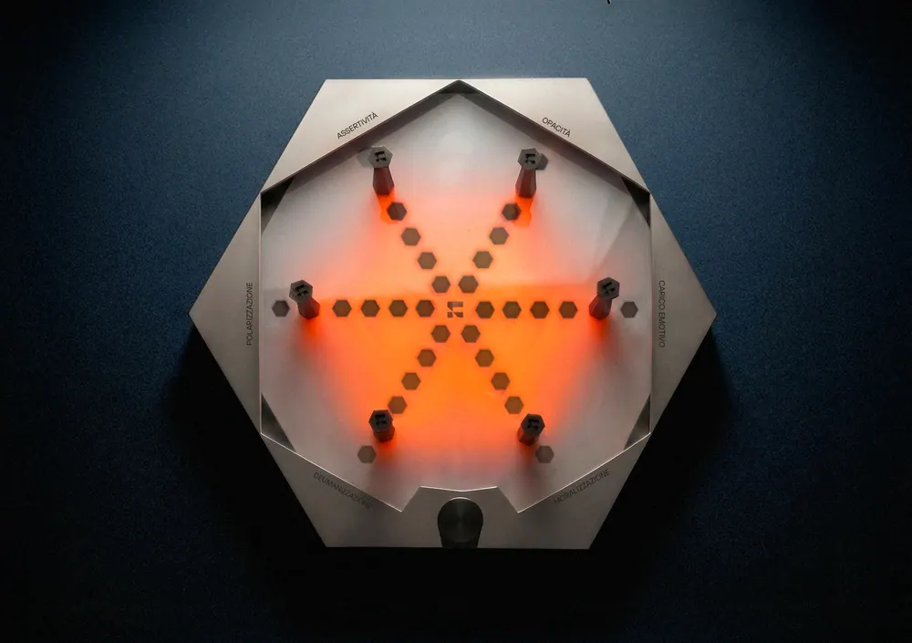
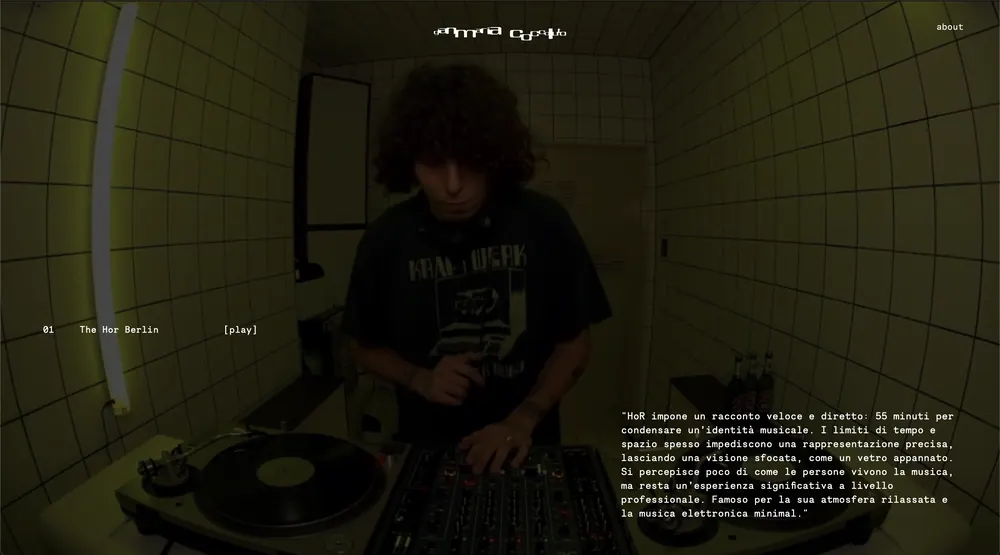
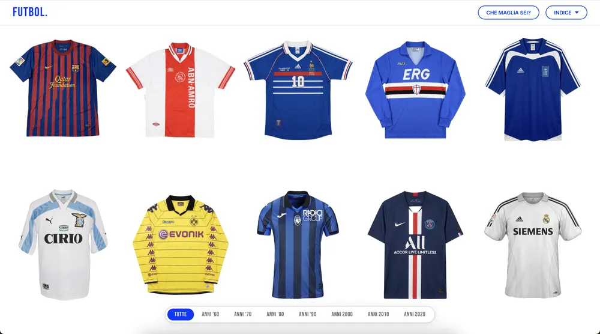
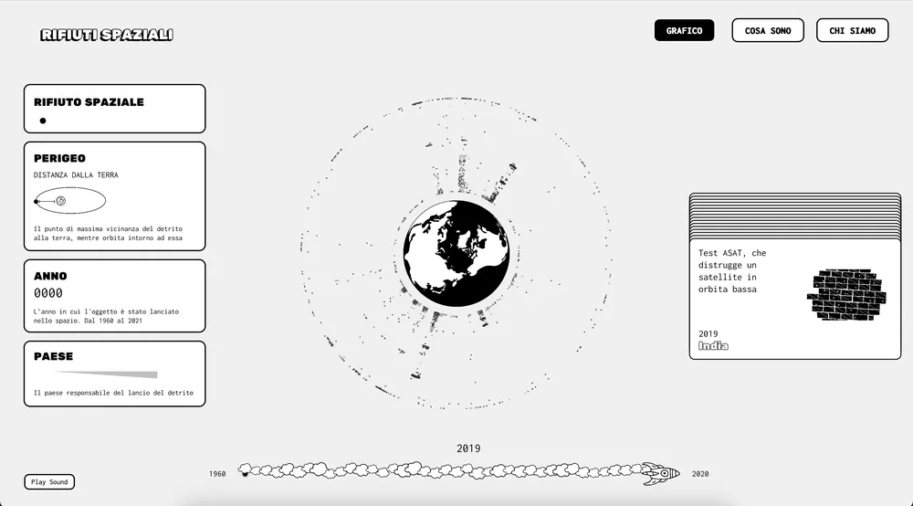
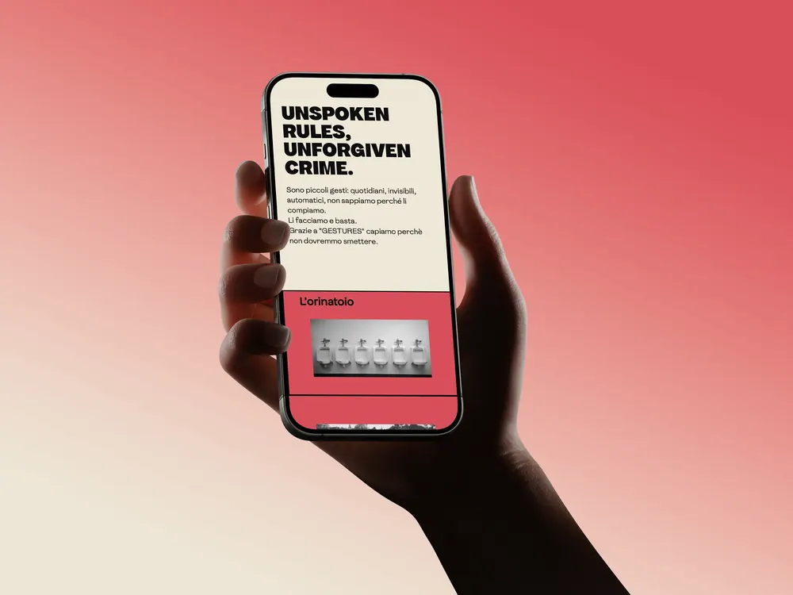
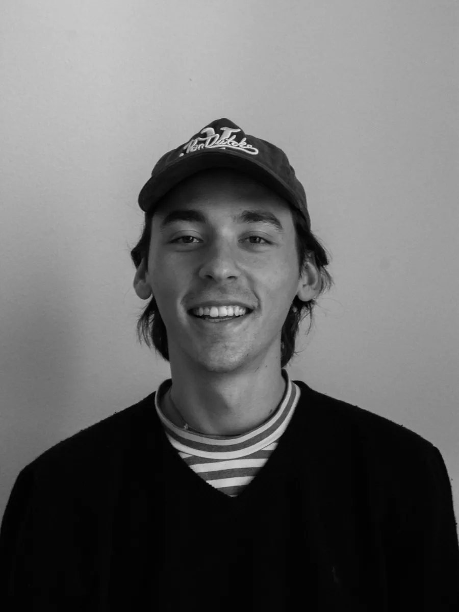

Ciao, sono Alessandro.Hi, I’m Alessandro. Progetto siti, app e interazioni, dallo schermo agli oggetti fisici, e poi li costruisco. I design websites, apps and interactions, from screens to physical objects, and then I build them.
Digital designer, studio Communication Design al Politecnico di Milano. Lavoro su UX e UI di siti e app e su installazioni interattive, portando le idee dalla ricerca a un prototipo che funziona. Cerco uno stage in UX/UI, digital product o interaction design. Digital designer studying Communication Design at Politecnico di Milano. I work on the UX and UI of websites and apps and on interactive installations, taking ideas from research to a working prototype. I’m looking for an internship in UX/UI, digital product or interaction design.
Sono solo un romagnolo a cui piace spataccareIn romagnolo: mettere le mani nelle cose e provare. Just a guy from Romagna who likes to spataccareRomagna dialect for getting your hands into things and trying.
Progetti selezionatiSelected projects

Fragma
Una macchina che riscrive le notizie mentre sposti le pedine: un’installazione sul potere delle parole.A machine that rewrites the news as you move the pieces: an installation about the power of words.

Sound Morphology
Un archivio web immersivo per il DJ GNMR, da esplorare dentro una medusa fatta di particelle.An immersive web archive for DJ GNMR, explored inside a jellyfish made of particles.

Futbol
Un archivio delle maglie che hanno fatto la storia del calcio, con un minigioco per scoprire quale ti si addice.An archive of the shirts that made football history, with a mini-game to find the one that suits you.

Space Debris
Oltre 14.000 rifiuti in orbita attorno alla Terra, da esplorare per paese e anno di lancio.More than 14,000 pieces of junk orbiting the Earth, to explore by country and launch year.

Gestures
Un’indagine ironica sulle regole non scritte della vita sociale, tutta su una landing page.A tongue-in-cheek investigation into the unwritten rules of social life, on a single landing page.
Cosa so fareWhat I can do
Design
- UX/UI design
- Web e app designWeb and app design
- Interaction design
- User flow e wireframeUser flows and wireframes
- UI design
- PrototipazionePrototyping
- Data visualization
- Speculative design
CodiceCode
- HTML, CSS
- JavaScript
- p5.js
- Three.js
- Python
- Webflow
Physical computing
- Arduino
- Sensori ToF e a ultrasuoniToF and ultrasonic sensors
- Matrici LEDLED matrices
- Modellazione 3D in Blender3D modelling in Blender
- Stampa 3D3D printing
- LLM in localeLocal LLMs
StrumentiTools
- Figma
- Illustrator
- Photoshop
- InDesign
- Fotografia analogicaAnalog photography
Info

Sono Alessandro, ho 23 anni e vengo da Riccione. Studio Communication Design al Politecnico di Milano.
Mi piace progettare come una persona usa una cosa, che sia un sito, un’app o un oggetto, e poi costruirla davvero: scrivendo il codice o collegando i sensori.
I’m Alessandro, I’m 23 and I come from Riccione. I study Communication Design at Politecnico di Milano.
I like designing how a person uses something, whether it’s a website, an app or an object, and then actually building it: writing the code or wiring the sensors.
FormazioneEducation
- Laurea magistrale in Communication DesignMSc Communication DesignPolitecnico di Milano, 2026 –
- Laurea triennale in Design della Comunicazione, 110/110BSc Communication Design, 110/110Politecnico di Milano, 2023 – 2026
- Erasmus, Faculdade de Belas-ArtesUniversidade de Lisboa, 2026
LingueLanguages
- Italiano madrelingua, inglese C1, spagnolo B1, portoghese A2Italian (native), English C1, Spanish B1, Portuguese A2